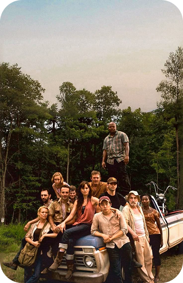

Comunidade

Grande parte do Fandom continua ativo mesmo sem atualizações sobre uma possível continuação da obra, sendo considerado uma das comunidades mais ativas de séries principalmente no Brasil. Sendo apelidados de “Walkers” pelo criador, que é como são chamados os mortos-vivos na série e nas HQs.
A obra tem vários portais ativos onde fãs se comunicam e conversam sobre ela:
Site Oficial Walking Dead Br Facebook Walking Dead Br Instagram @walkingdeadbr: